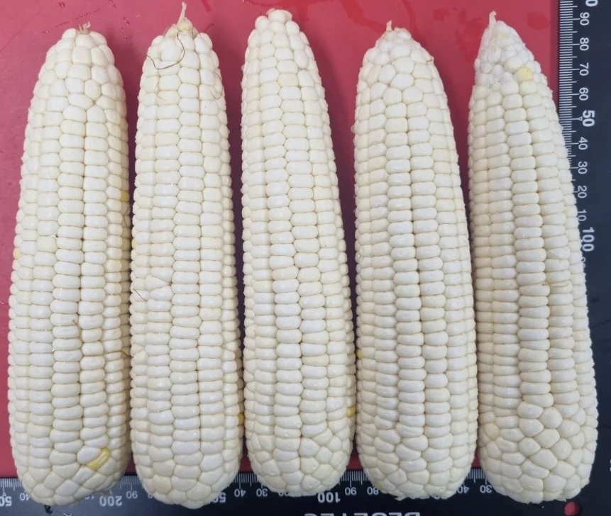

2027 찰옥수수 종자 공급｜김해 신청 기한·1kg 단위·수령 일정

농촌진흥청 찰옥5호 이삭 참고 사진. 이번 공급 안내의 미백2호·미흑찰·흑점2호 사진이 아닙니다.
2027년 찰옥수수 종자를 준비한다면 내 지역 접수 기한과 공급 품종부터 확인하세요. 김해시 안내 기준 신청은 11월 20일~12월 18일이며, 이 날짜를 전국 공통 마감으로 사용하면 안 됩니다.
김해 안내에서 확인한 품종과 가격
신청 품종은 미백2호·미흑찰·흑점2호입니다. 공급 가격은 1kg당 3만 1천원, 포장 단위는 1kg으로 안내돼 있습니다. 공급 예정 기간은 2027년 1월 11일~2월 12일입니다. 미흑찰은 전년 신청량의 150% 이내라는 제한이 있으므로 신규 신청이나 증량 가능 여부는 접수처에 확인하세요.
면적만 적기 전에 재배 계획을 정합니다
노지 직파인지 육묘 후 정식인지, 한 번에 심을지 시기를 나눌지에 따라 필요한 수량과 수령 시점이 달라집니다. 지난해 남은 종자가 있다면 품종과 보관 상태를 먼저 확인합니다. 품종을 바꿀 때는 숙기·판매처 선호·재배지 적응성을 지역 지도 담당자에게 문의하세요. 사진의 참고 품종과 공급 공고의 품종을 혼동하지 마세요.
| 단계 | 확인할 것 | 기록 |
|---|---|---|
| 신청 전 | 지역 기한·품종·신청 자격 | 담당 창구 ___ |
| 수량 계산 | 면적·재배방식·포장 단위 | ___kg / ___원 |
| 배정 후 | 확정 품종·감량·납부일 | 배정 통지 ___ |
| 수령 | 봉투 표시·수량·보관 | 수령일 ___ / 로트 ___ |
주문량과 결제액 계산 예시
지역 지도 기준으로 필요한 종자량을 계산한 결과 2.4kg이라고 가정하면 1kg 단위 주문에서는 3kg이 필요하고 공고 가격 기준 9만 3천원입니다. 2.4kg이라는 값은 표준 파종량이 아니라 계산 예시입니다. 면적×지역·재배방식별 소요량을 먼저 구한 뒤 포장 단위로 올림해야 합니다. 배송비 등 추가 비용과 납부 시점은 접수처에 확인하세요.
접수증과 수령 종자의 이름을 다시 맞춥니다
희망 품종을 적었다고 반드시 전량 배정되는 것은 아닙니다. 최종 배정 품종·수량, 가격 변동 여부, 인수 장소를 확인하고 종자 봉투의 표시와 대조하세요. 수령 후 보관 방법은 공급기관의 안내를 따르고, 수령일과 로트 정보를 남겨두면 품질 문제 문의에 도움이 됩니다.
작업 전 점검표
- 김해 이외 지역은 해당 지자체 공고를 확인했다
- 선택 품종과 대체 가능 품종을 구분했다
- 수령 예정일을 파종 준비 일정에 반영했다
종자 신청 마감일, 배정일, 실제 수령일은 서로 다릅니다. 파종 계획에는 세 날짜를 따로 적으세요.